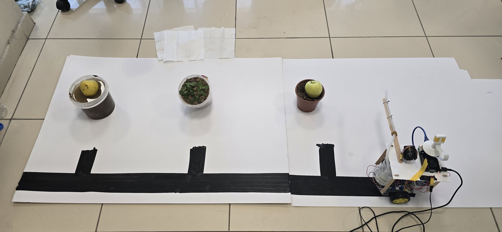
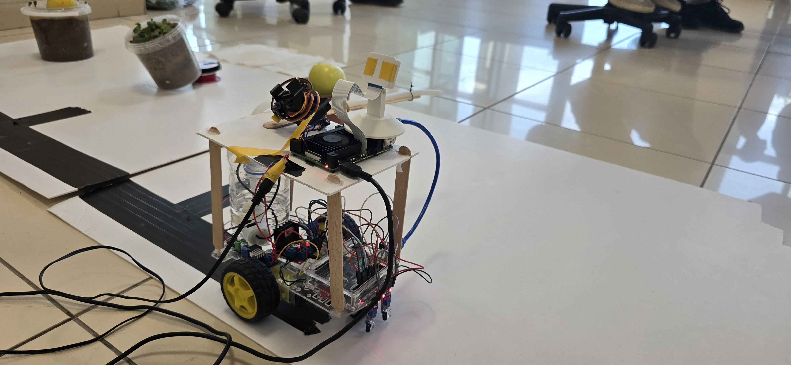
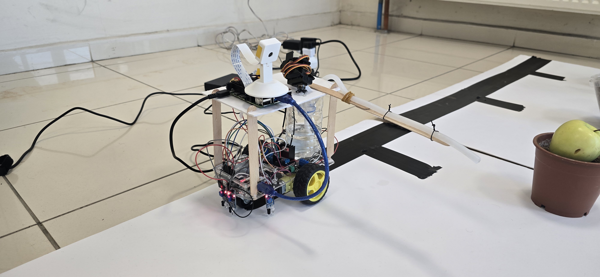
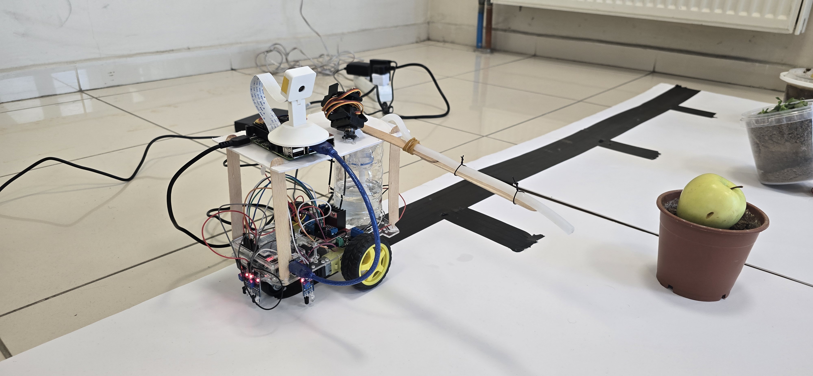
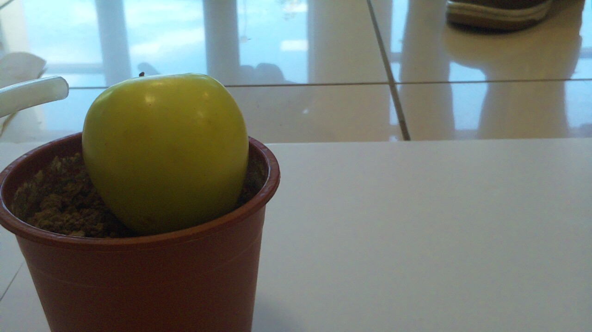
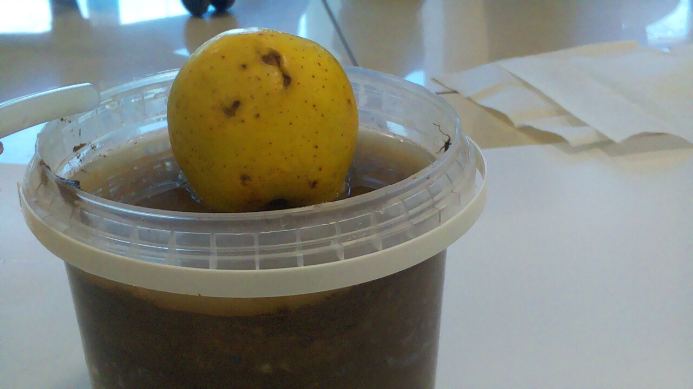
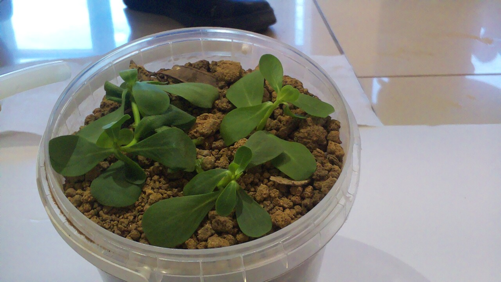
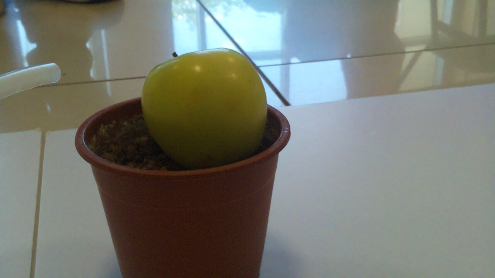
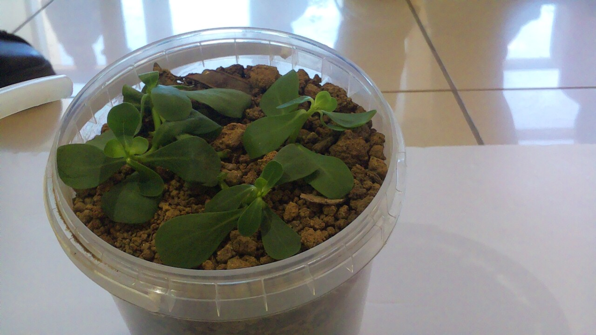
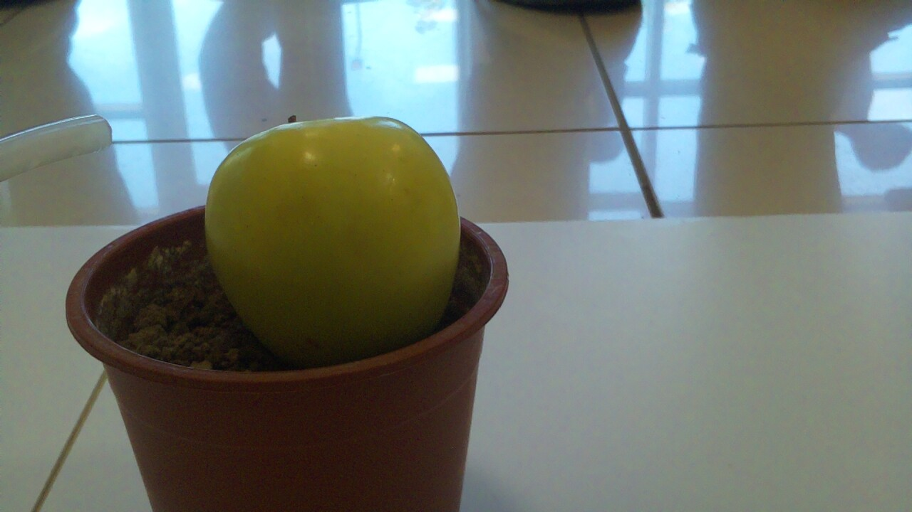

An autonomous ground robot follows a tape line through a row of plants, stops at each one, decides what it's looking at on-device, and acts — a laser for weeds, water for the sick ones. No cloud. No human.
Live run of the robot following the line, stopping at a plant, and acting on what it sees. Tap for sound.
Three IR sensors keep the robot centered on the tape until the left sensor catches a black station band.
The robot halts, waits two seconds to stop vibrating, and signals the Raspberry Pi that a plant is in frame.
The Pi camera grabs a frame and a custom-trained YOLO model locates the plant and classifies it: healthy, diseased, or weed.
A confidence gate decides whether YOLO's call is enough — or whether to escalate to a SmolVLM-256M vision-language model for a second opinion.
Weed → laser fires. Diseased → pump sprays. Healthy → leave it be. Then the robot resumes the line to the next plant.
Real photos from demo day — the taped course, the plant stations, and the pan-tilt head that aims the laser and water at each plant.




Real frames grabbed by the Pi camera the moment the robot stopped at each station — exactly what gets fed to YOLO for classification.






3-IR line following, station detection, and a four-state machine that knows when to stop, wait, and resume.
picamera2 capture + custom YOLO (best.pt) detection, cropped to a 224×224 region of interest.
SmolVLM-256M behind a YOLO-confidence bypass gate, keeping the per-plant cycle fast.
The orchestrator turns a decision into laser/pump commands — with auto-off safety on both sides.
A read-only web panel that tails the run live: state, camera feed, and the latest decision.
Ultralytics YOLO · HuggingFace transformers · OpenCV · C++17 · Arduino C — all running on a Pi 4 CPU.
Eight students across the five modules of the sense → reason → act pipeline.
Line following, IR sensors & motor control, marker detection and the state machine.
Camera pipeline & preprocessing, YOLO detection and bounding-box output.
VLM inference, prompt engineering, output parsing and validation.
Decision logic & state design, integration and actuator workflow.